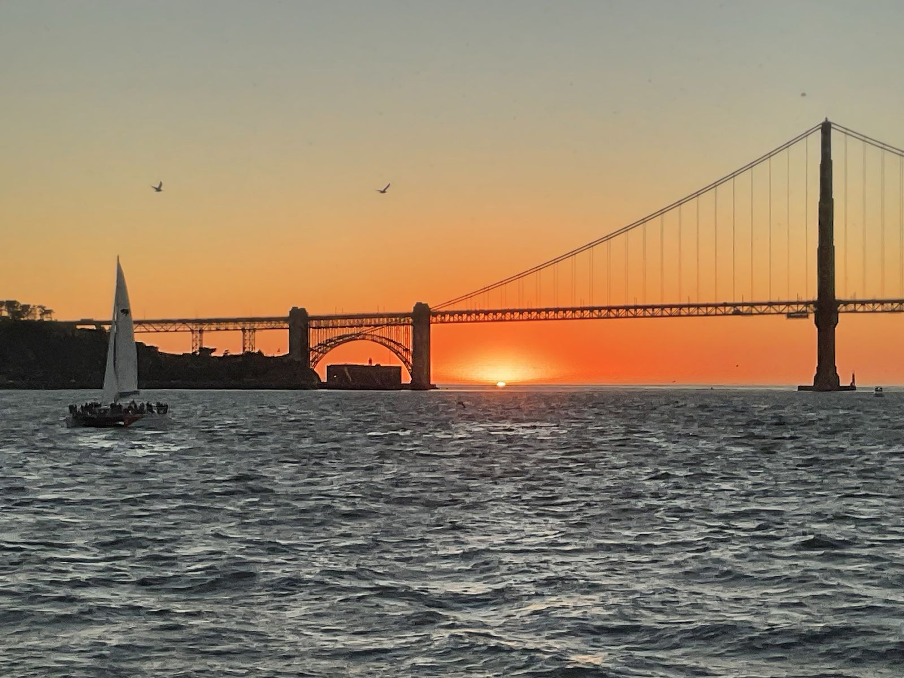
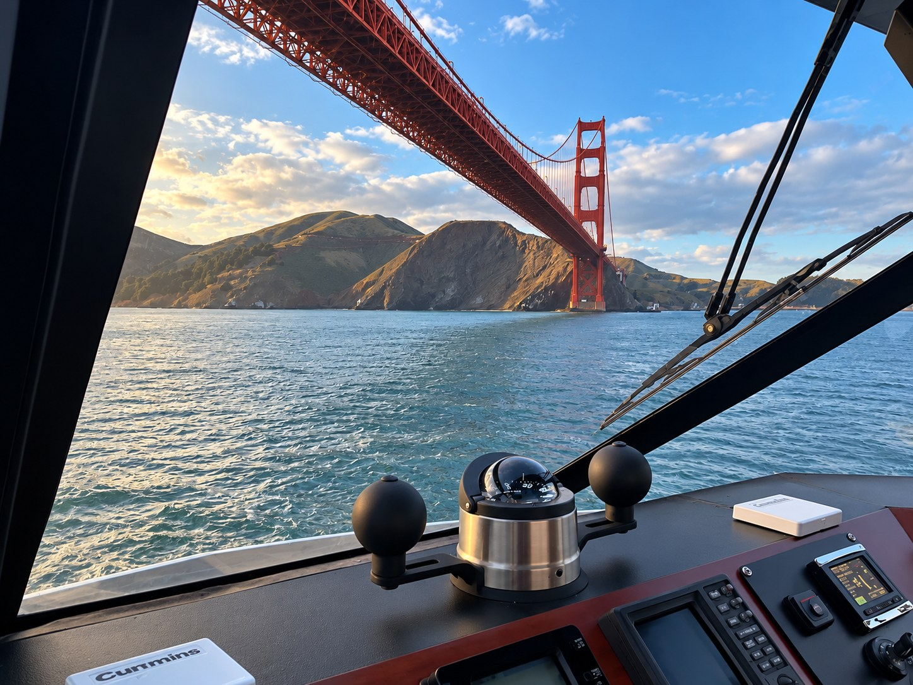
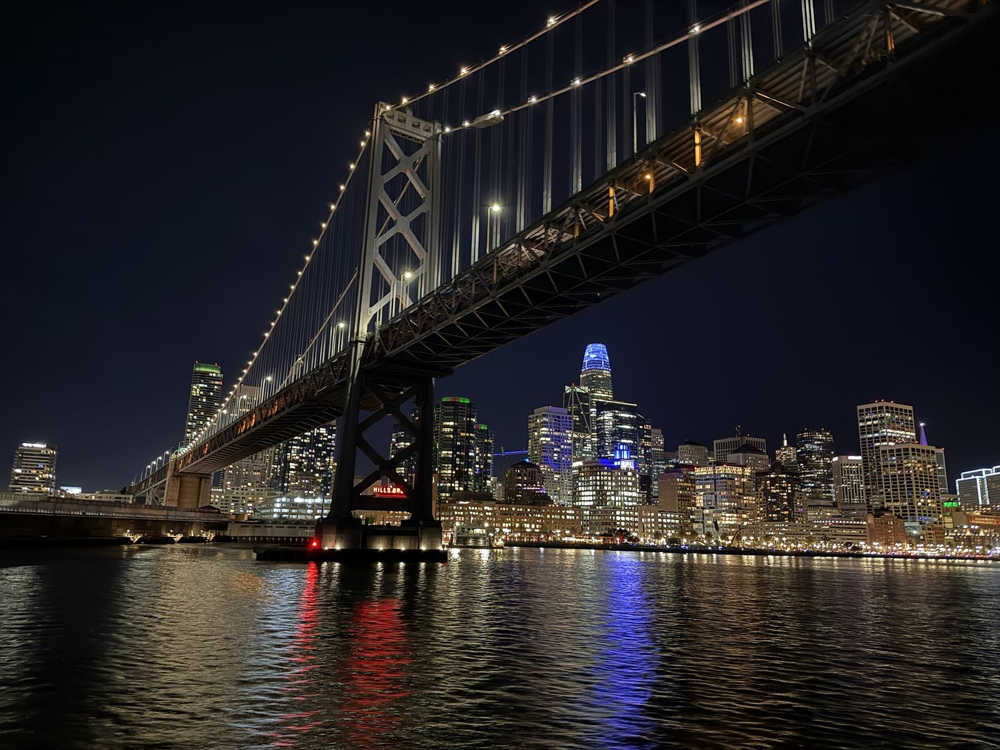

San Francisco Bay Boat Charters
The right charter boat, chosen by a captain who knows them all.
I’ve run nearly every charter boat on San Francisco Bay. Online listings all look the same; I know which boats have the best crews and food, and which one fits your group, budget and occasion. From a sunset proposal for two to a large company party, I’ll find the best match for your trip.
My matching service is free to you, and you pay the same price as booking directly. Charter companies pay me a referral fee when you book.
Summer weekends and sunset slots book up early.

A private charter for every occasion
Sunset cruises, birthdays and anniversaries, marriage proposals, wedding parties, corporate outings and client entertaining, family visits, or simply a day on the water with friends. Whatever the occasion, it's your boat for the day.

Where we can go
Cruise under the Golden Gate Bridge, past Alcatraz and along the San Francisco waterfront, across to Sausalito or Angel Island, or under the Bay Bridge with the city skyline lit up at night. Sea lions, harbor seals and porpoises are regular sights, and humpback whales visit near the Golden Gate in season.

How it works
1. Tell me what you have in mind: your date, number of guests, the occasion and how long you'd like to be out.
2. I match you with the right boat from my network of Bay Area marine contacts, aboard vessels appropriately authorized to carry passengers.
3. You enjoy the Bay while experienced professionals take care of everything.
Charter questions
Why arrange a charter through you?
I bring firsthand knowledge of Bay Area charter boats and the people who run them. I’ll help you think through the group, occasion and experience you want, then connect you with a suitable vessel.
Is there a fee for your help?
No. My matching service is free to you, and you pay the same price as booking directly with the charter company. You’ll receive the charter details and price before deciding whether to book.
How do you get paid?
The charter company pays me a referral fee when you book through me. It doesn’t change your price.
Will you be our captain?
That depends on the vessel and my availability. We’ll confirm who will be at the helm before you book.
How many people can come?
It depends on the boat. Small groups, large parties and corporate events can all be arranged. Tell me your group size and I'll find a vessel that fits.
Do we need any boating experience?
None at all. A licensed captain runs the boat. You and your guests simply relax and enjoy the day.
How far ahead should I book?
As early as you can, especially for summer weekends, holidays and sunset cruises. Last-minute requests are welcome too. Just ask.
What about the weather?
San Francisco Bay weather changes quickly. Your safety comes first, and we'll keep an eye on wind, fog and tides before your trip. Bring layers, even in summer.